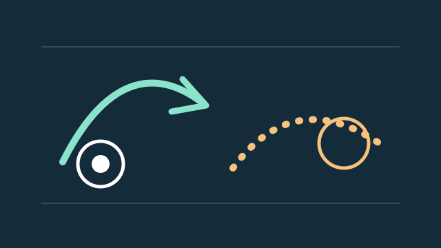
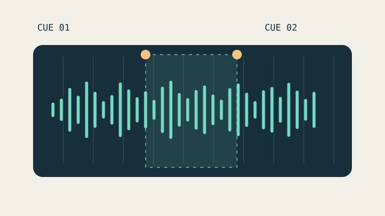
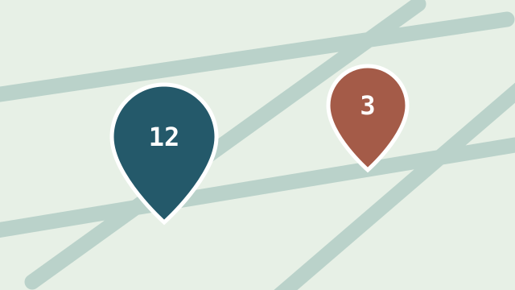
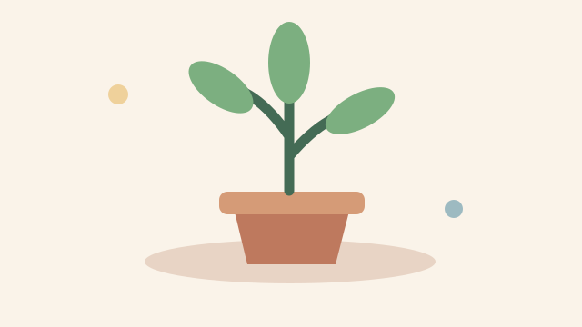

Four standalone original vectors
静态原创 SVG，未接入真实手势、音频、地图数据。

VG-013 · Touch gesture arcs / 触控手势轨迹

VG-014 · Audio annotation grid / 音频分段标记

VG-015 · Map pin constellation / 地图聚合标记

VG-016 · Empty state garden / 空状态插画